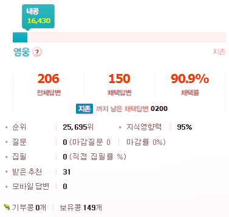
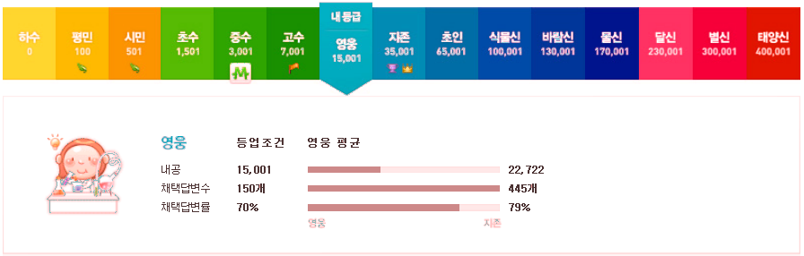

네이버 지식인에서 3월 14일 첫 답변 이후 거의 5개월만에 영웅 등급에 이르렀다. 답변으로 등록한 개수가 총 206개인데 그 중 150개가 채택된 것이다. 댓글이나 삭제한 것까지 치면 더 많을 것이다. 내가 그 동안 거친 등급은 하수 - 평민 - 시민 - 초수 - 중수 - 고수 - 영웅 순서다.


네이버 지식인을 하기 전에는 누가 시간 남아서 저렇게 답변을 올리나 했는데 틈틈이 올리면 안될 것도 없을 것 같다. (어떤 사람은 정말 시간이 남는지 2개월만에 영웅이 된 사람도 봤다.) 개중에 답변을 몇 천개씩 올린 "신"급 회원은 정말 되기 힘들 텐데 그런 사람들이 꽤 많은 걸 보면 감탄스러운 뿐이다. 그 정도 노력이면 자기 분야에서 안되는 게 없을 것이다.
답변을 올릴 때도 조금은 전략이 필요했다. 최근 올라온 질문에 빠르게 답변을 해야 채택 확률이 높다. 또한 이미 답변이 있더라도 어정쩡하다면 조금만 더 성의 있는 답변을 올림으로써 잘 채택되기도 한다.
이제 앞으로의 계획은… 없다. 여기까지 했으면 많이 한 거다. ^^ 이제 조금 다른 쪽에 관심을 가지자.